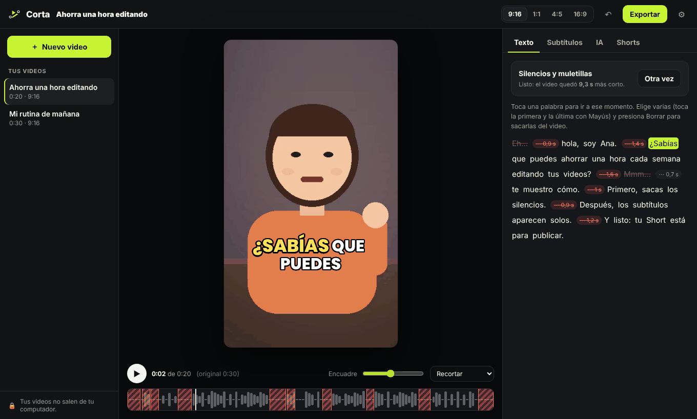

Corta
CortaEditas el texto, se edita el video.Edit the text, the video follows.
El editor para Shorts, Reels y TikTok que transcribe tu video en tu computador. Borras una frase y se borra del video. Subtítulos animados, sin silencios ni muletillas, y tu propia IA hace el trabajo pesado.The editor for Shorts, Reels and TikTok that transcribes your video on your computer. Delete a sentence and it's cut from the video. Animated captions, no silences or filler words, and your own AI does the heavy lifting.
La app para Mac llega muy pronto. La vista previa funciona en el navegador con un video de mentira. En GitHub, toca «Watch → Custom → Releases» para enterarte cuando salga.The Mac app is coming very soon. The preview runs in your browser with a made-up video. On GitHub, click “Watch → Custom → Releases” to hear when it ships.
De 30 segundos horizontales a 21 verticales, en dos clics.From 30 landscape seconds to 21 vertical ones, in two clicks.
«Limpiar» sacó los silencios y los «eh», «mmm». Después le pedimos a la IA un zoom y un título. Ana es dibujada y su voz es sintética: no es una persona real.“Clean up” removed the silences and the “uh”, “um”. Then we asked the AI for a zoom and a title. Ana is drawn and her voice is synthetic: not a real person.
Lo que más haces en CapCut, sin pagar ni subir nada.What you do most in CapCut, without paying or uploading.
Edita por textoEdit by text
Cada palabra con su tiempo. Elige y borra: se corta del video.Every word with its timing. Select and delete: it's cut from the video.
Sin silencios ni muletillasNo silences or filler words
Un clic saca las pausas largas y los «eh», «mmm». Se puede deshacer.One click removes long pauses and “uh”, “um”. Fully undoable.
Subtítulos animadosAnimated captions
Palabra por palabra, en casi 100 idiomas. Estilos que crea la comunidad.Word by word, in almost 100 languages. Styles made by the community.
Vertical primeroVertical first
9:16, 1:1, 4:5 o 16:9, moviendo el encuadre o con fondo borroso.9:16, 1:1, 4:5 or 16:9, moving the framing or with a blurred background.
Shorts de un video largoShorts from a long video
Tu IA elige los mejores momentos de una clase, un podcast o un live.Your AI picks the best moments of a class, a podcast or a live stream.
Sin marca de aguaNo watermark
1080 px, sin límite de duración y sin cuenta. El original nunca se toca.1080 px, no length limit and no account. The original is never touched.
Dile lo que quieres. Tu IA lo edita.Say what you want. Your AI edits it.
Usa la IA que ya tienes (Claude, ChatGPT o Gemini), con tu cuenta. Solo ve el texto con sus tiempos, nunca el video. Responde cambios que Corta revisa antes de aplicar, y cada uno se puede deshacer.It uses the AI you already have (Claude, ChatGPT or Gemini), with your account. It only sees the text with its timing, never the video. It answers with changes Corta checks before applying, and each one can be undone.

Lo que gana y lo que no.Where it wins and where it doesn't.
| Corta | CapCut | Editores abiertos clásicosClassic open editors | |
|---|---|---|---|
| Gratis, sin marca de aguaFree, no watermark | ✓ | Con límitesWith limits | ✓ |
| Editar por textoEdit by text | ✓ | ParcialPartial | — |
| Subtítulos automáticosAutomatic captions | ✓ | ✓ | — |
| Tus videos no se subenVideos never uploaded | ✓ | — | ✓ |
| Editar con tu IA en palabrasEdit with your AI in words | ✓ | — | — |
| Efectos, transiciones y plantillasEffects, transitions and templates | Pocos (por ahora)Few (for now) | ✓ | ✓ |
| Línea de tiempo con varias pistasMulti-track timeline | Todavía noNot yet | ✓ | ✓ |
| App de celularPhone app | — | ✓ | — |
Corta recién parte: se enfoca en lo que más tiempo quita al hacer Shorts. Lo demás lo vamos sumando con la comunidad.Corta is just starting: it focuses on what takes the most time when making Shorts. The rest we'll add with the community.
Lo que la gente pregunta.What people ask.
¿Es una alternativa gratis a CapCut?Is it a free CapCut alternative?
Para lo que más se usa en Shorts, Reels y TikTok (subtítulos animados, cortar silencios, formato vertical), sí: gratis, de código abierto y sin marca de agua. CapCut tiene muchos más efectos, plantillas y una app de celular; Corta recién parte y se enfoca en editar rápido por texto.For what people use most for Shorts, Reels and TikTok (animated captions, cutting silences, vertical format), yes: free, open source and no watermark. CapCut has far more effects, templates and a phone app; Corta is just starting and focuses on fast text-based editing.
¿Mis videos se suben a algún lado?Are my videos uploaded anywhere?
No. La transcripción y la exportación pasan en tu computador. Tu IA solo recibe el texto del video con sus tiempos, con tu propia cuenta.No. Transcription and export happen on your computer. Your AI only receives the video's text with its timing, with your own account.
¿Pone marca de agua o limita la resolución?Does it add a watermark or limit resolution?
No. Exporta en 1080 px, sin marca de agua y sin límite de duración.No. It exports at 1080 px, with no watermark and no length limit.
¿En qué idiomas hace subtítulos?Which languages does it caption?
En los que entiende whisper, el transcriptor abierto: español, inglés, portugués, francés y casi 100 idiomas más.Those whisper, the open transcriber, understands: Spanish, English, Portuguese, French and almost 100 more.
¿Necesito una IA para usarlo?Do I need an AI to use it?
No para editar por texto, limpiar silencios y poner subtítulos. La IA sirve para pedir cambios en palabras y sacar Shorts de un video largo. Cómo instalar tu IA.Not for text editing, cleaning silences and captions. The AI is for requesting changes in words and making Shorts from a long video. How to install your AI.
¿Por qué mi computador dice que no puede verificar la app?Why does my computer say it can't verify the app?
Porque es un proyecto gratis que todavía no tiene el certificado pagado de Apple o Microsoft. El código es abierto. En Mac: Ajustes del Sistema → Privacidad y seguridad → «Abrir igualmente». En Windows: «Más información» → «Ejecutar de todas formas».Because it's a free project without a paid Apple or Microsoft certificate yet. The code is open. On Mac: System Settings → Privacy & Security → “Open Anyway”. On Windows: “More info” → “Run anyway”.
La hacemos entre todos.We build it together.
Pruébala ahora.Try it now.La vista previa funciona en tu navegador con un video de mentira. Nada que instalar.The preview runs in your browser with a made-up video. Nothing to install.
Abrir la vista previaOpen the preview →